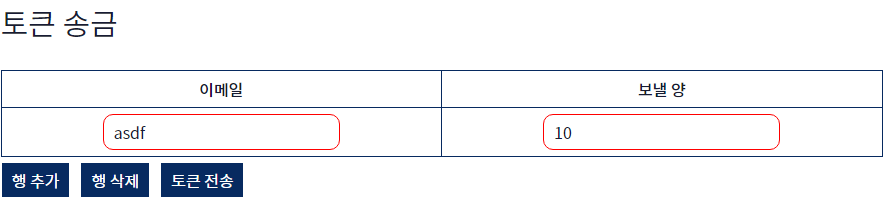

사용자 목록
먼저 사용자 목록 기능부터 보겠습니다.
사용자 목록 기능은 사용자의 정보를 볼 수 있는 기능입니다. 이메일, 닉네임, 지갑 주소, 현재 보유한 토큰, 총 4가지의 정보를 볼 수 있습니다. 조회 버튼을 누르면 현재 SKKoin 블록체인 네트워크에 참여하고 있는 모든 클라이언트의 정보를 열람할 수 있습니다. 조회 버튼을 누르면 아래와 같은 모습이 됩니다.
위의 이미지를 보면, 지갑 주소가 존재하는 클라이언트가 있고, 그렇지 않은 클라이언트가 있습니다. 지갑 주소가 존재하는 경우는 회원가입을 한 후 지갑을 생성하여 지갑이 존재하는 상태이고, 그렇지 않은 경우 회원가입만 한 상태입니다. 보통 데이터베이스에 이메일이 등록되는 경우는 클라이언트에서 지갑을 생성한 후이므로 지갑 주소가 없는 경우는 없다고 봐도 무방합니다.
토큰 전송
다음은 토큰 전송 기능입니다.
토큰 송금 기능은 특정 이메일로 일정 양의 토큰을 전송하는 기능입니다. 이메일과 보낼 토큰의 양을 입력하면 루니버스 API를 통해 해당 이메일이 주인인 지갑의 주소로 토큰이 보내집니다. 우선 행 추가 버튼을 눌러보겠습니다.
행 추가 버튼을 여러 번 누르니 이메일과 보낼 토큰의 양을 입력받는 부분이 생겼습니다. 칸이 여러 개인 이유는 한 번에 송금을 할 수 있기 때문입니다. 각각의 칸에 보내고싶은 이메일과 각 이메일마다 보낼 양을 정해주면 한 번에 처리하게 됩니다.
이제 반대로 행 삭제 버튼을 눌러서 행을 삭제하겠습니다. 행 삭제는 아래에서부터 지우며, 내용이 들어있어도 삭제가 되므로 유의해야 합니다. 한 칸만 남기고 행을 지운 후, 이메일과 보낼 토큰의 양에 내용을 넣어보겠습니다.
테스트로 존재하지 않는 이메일과 10 토큰을 넣어보았습니다. 여기서 토큰 전송 버튼을 누르면 test@skku.edu에 해당하는 지갑 주소를 데이터베이스에서 검색한 후, 그 지갑 주소로 10 토큰 전송 요청을 루니버스 API에 보냅니다. 성공적으로 보내진 경우, 그 내용을 담고 있던 행(줄)은 사라집니다. 하지만 경우에 따라 토큰이 전송되지 않았을 수 있습니다. 이 경우에는 행이 사라지지 않고 아래와 같이 붉은색 테두리로 남게
됩니다.

토큰이 전송되지 않은 이유는 크게 2가지가 있습니다. 첫 번째는 이메일이 데이터베이스에 존재하지 않는 경우입니다. 해당 이메일로 가입을 한 내역이 없는 것이죠. 두 번째는 보내려는 토큰의 양이 잘못된 경우입니다. 시스템 계정이 가진 토큰보다 큰 값을 입력하면 전송이 성공되었다고 메시지가 나오지만 실제로 보낼 수 없는 경우이므로 전송에 실패할 것입니다. 보내려는 토큰의 양이 음수인 경우 또한 문제가 됩니다. 이 경우는 전송 요청도
받아들여지지 않아 행이 그대로 남을 것입니다.